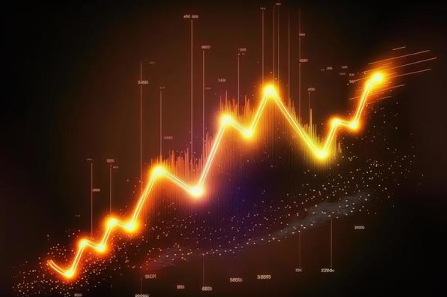

1.1. Definición de Trading
El trading se refiere al proceso de comprar y vender activos financieros, como acciones, divisas o criptomonedas, con el fin de obtener beneficios. Implica la especulación de los movimientos de precios en los mercados financieros, usando herramientas de análisis técnico, fundamental y de sentimiento (Smith, 2020).
Más información:
El trading abarca diversas formas de inversión, desde el day trading hasta el position trading. Los traders utilizan análisis y estrategias para anticipar los movimientos de los mercados y obtener ganancias a corto, medio o largo plazo.
1.2. Historia y Evolución del Trading
La historia del trading se remonta a las primeras civilizaciones donde los intercambios de bienes y metales preciosos daban lugar a la actividad comercial. En el siglo XVII, la creación de bolsas de valores, como la Bolsa de Ámsterdam, marcó el comienzo del trading moderno (Miller, 2018).
Más información:
A medida que la tecnología avanzaba, los intercambios y el acceso a los mercados financieros se expandieron. La introducción de plataformas electrónicas permitió el acceso global, lo que transformó la forma en que las personas realizan trading. Hoy en día, el trading está integrado en las plataformas digitales, lo que facilita el acceso a los mercados financieros para los inversores minoristas.
1.3. Tipos de Trading: a Corto, Medio y Largo Plazo
Corto Plazo (Day Trading): El day trading implica comprar y vender activos en el mismo día, aprovechando las pequeñas fluctuaciones del mercado (Brown, 2021).
Más información:
Los traders que practican el day trading buscan capturar movimientos rápidos en los precios utilizando apalancamiento, lo que aumenta el riesgo, pero también las posibles ganancias.
Medio Plazo (Swing Trading): El swing trading busca beneficiarse de los movimientos de precios durante varios días o semanas (Davis, 2019).
Más información:
Los traders utilizan herramientas como los indicadores técnicos y el análisis de tendencias para predecir el movimiento de los activos.
Largo Plazo (Position Trading): El position trading se basa en mantener una posición durante meses o incluso años, apostando por la dirección general de los mercados (Lee, 2022).
Más información:
Los position traders se enfocan más en los análisis fundamentales que en las fluctuaciones a corto plazo. Este estilo de trading requiere paciencia y una visión a largo plazo.